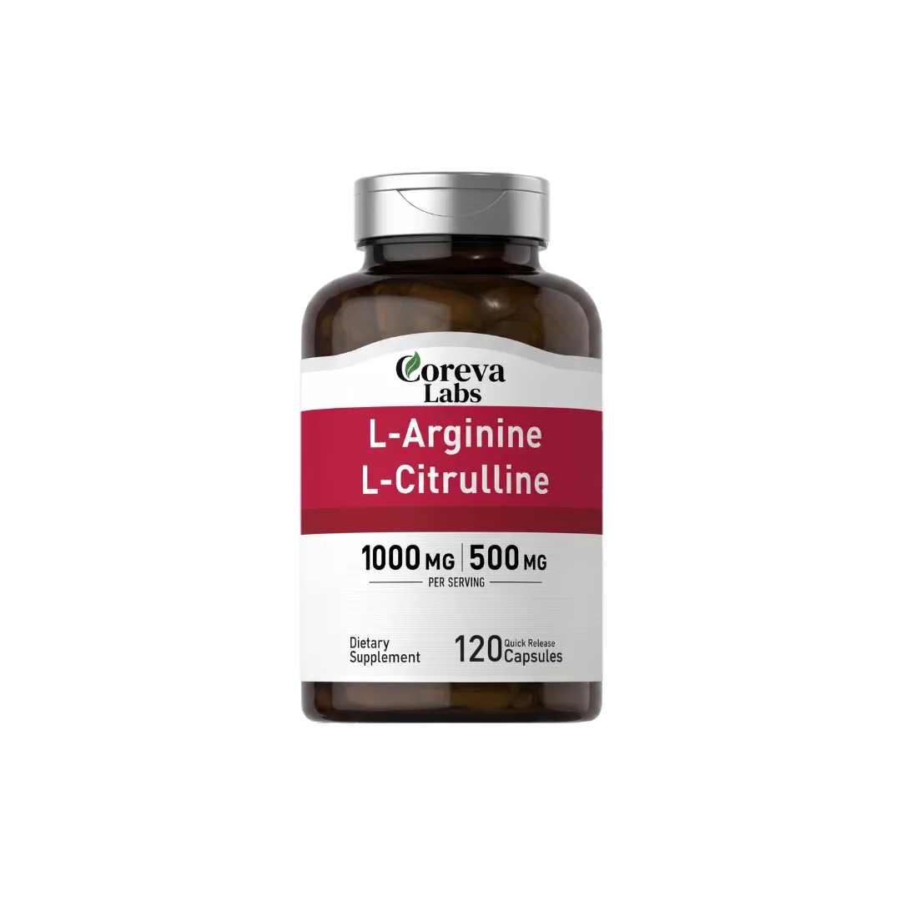
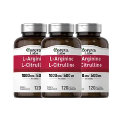
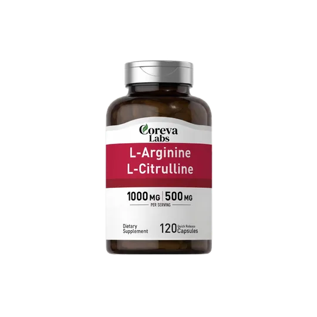

Heart health
685,000 Americans die from high blood pressure every year. Here are 6 reasons why people who finally got their blood pressure under control take this every morning.
Most people blame their diet, their genetics, or their age. It is none of those things. Here is what people who actually lowered their blood pressure consistently do differently than everyone else.

guarantee
Everything you have tried has been treating the wrong thing
What most supplements do
- L-Arginine capsule
- Destroyed in the gut by arginase
- Little reaches your vessels
How Nitric Oxide Flow gets there
- L-Citrulline capsule
- Bypasses the gut enzyme
- Converts in the kidneys
- Nitric oxide at the vessel wall
Your blood pressure has been creeping up for years and you have slowly felt it in your everyday life. That tightness in your chest when you walk, waking up at 3am for no reason, that heaviness you cannot shake no matter how much caffeine you take.
Here is what nobody told you. 685,000 Americans die from high blood pressure every year and most of them felt exactly the same way you feel right now. Completely fine until they were not.
They took Lisinopril every morning, cut the salt, and walked every day to manage the number on the cuff, but never addressed the root cause behind the real damage.
Your systolic starts moving in the right direction for the first time in years
After 50 your vessel walls produce less nitric oxide every year, and no supplement, medication, or diet change is designed to fix that directly. This is why your arteries stiffen, your heart works harder, and you feel it in every workout, every foggy afternoon, and every morning you wake up not quite fully rested.
That is why your body needs L-Citrulline, which actually reaches your vessel wall and restores the nitric oxide signal your arteries stopped receiving. When the signal returns your heart stops fighting and that tight, heavy feeling you have been carrying around starts to lift.
I watched my mother die of a stroke at 61. I am 57. My systolic has dropped 19 points in 60 days and for the first time in years I am not afraid every time I pick up the cuff.
You stop feeling like your body is working against you
Within the first few weeks most people notice their energy is more consistent and they are no longer dealing with that afternoon crash they had accepted as normal.
When your vessel walls start receiving nitric oxide again through L-Citrulline, your arteries begin relaxing, your heart stops fighting, and your energy stops disappearing by noon.
That means you can get through your workouts without your heart pounding out of your chest. You have energy left at the end of the day for your family. You can play with your kids, enjoy your hobbies, and move through your life without feeling like your body is working against you.

Nitric Oxide Flow Right now Coreva Labs is running their biggest sale of the year Backed by a 60-day money-back guarantee Check availabilityYour body starts lowering its own blood pressure naturally
Stiff vesselNarrow, heart pushes harder
Relaxed vesselWider, blood flows freely
Most blood pressure medications work by overriding your cardiovascular system, which means your body needs them for life to keep the numbers consistent.
Most medications
Override your system. Needed for life to keep the numbers steady.
Nitric Oxide Flow
Restores your body's own nitric oxide production at the vessel wall.
Nitric Oxide Flow works differently by using L-Citrulline to restore your body's own natural ability to produce nitric oxide and restore your vessel walls. This helps lower your systolic number naturally without any cramping, dependency, or side effects.
This is why so many of our users describe this as the first approach that actually made them feel like themselves again.
People who could not get below 150 for years are now seeing their best readings
Over 50,000 people have switched from the garlic capsules, the beet root powder, and the blood pressure supplements that never moved the needle to Nitric Oxide Flow. People who had been stuck above 150 for years have reported:
- 91% reported a drop of 10 or more points in their systolic reading within 90 days
- 83% said they stopped experiencing the afternoon energy crash
- 81% reported feeling less tightness in their chest during physical activity
We guarantee your systolic moves or you get every cent back

- Full refund
- No return required
- No questions asked
We offer a full 60-day money-back guarantee so you can try Nitric Oxide Flow completely risk free. If your systolic does not move and you do not feel a meaningful difference in how you feel, we will refund every cent. No return required. No questions asked.
Over 50,000 people who have already tried this have been able to lower their systolic reading and get their energy back, and we are confident you will too.
 Nitric Oxide Flow
Nitric Oxide Flow